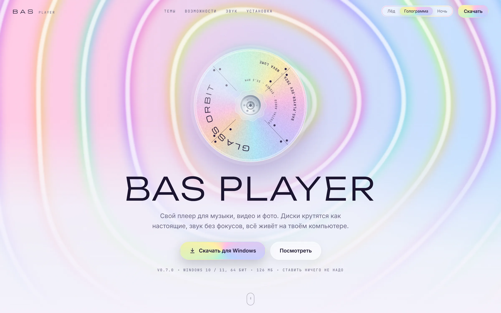

о себе · 2+ года
Делаю сам от идеи до готового файла.
3D, анимация, сайты и приложения. Не тащу чужое с Pinterest: смотрю, почему работает референс, и делаю своё. А пока листаешь, слева дорисовывается кадр из моего города.
[ok] своё, а не перерисовка с Pinterest
[ok] не умею? разберусь и сделаю
[ok] файлы отдаю аккуратно, по папкам
[ok] нейросети помогают, но думаю я
[done] кадр готов, а смена продолжается
Проекты(04)
самый большой проект
и три, доведённые до конца
(01)
Город I.I.E.Целый город в 3D: стрелка ОАО стоит посередине как памятник, за ней огромная оранжевая луна, мыши и волна цунами. Внутри показываю, как он собирался.
смотреть ↗
(02)
BAS PlayerМузыкальный плеер в трёх настроениях: лёд, голограмма и ночь. К нему сайт и оформление всего компьютера в том же стиле.
смотреть ↗(03)
GameKiosk«Все игры. Одна система.» Программа для компьютерных клубов: гость садится и сразу играет, а клуб платит только за наигранные минуты.
смотреть ↗
(04) · для ОАО
Стеклянная вода
Пять обоев одной серии для ОАО, на компьютер и на телефон. Стекло, вода и холодный свет. Листаются сами, а можно выбрать любые.
13:00
Путь(10)
от одной страницы
до целого города
По списку задач
Что нужно ОАО каждый день и где это уже есть на сайтеКак работаю
От тебя идея, от меня решения и готовые файлы(01)Идея → вариантыСкажи, что нужно. Принесу два-три варианта и объясню, почему каждый сработает.
(02)Референс, а не копияСмотрю, что делает чужую работу сильной: свет, ритм, материал. Потом делаю своё.
(03)Файлы в порядкеВсё разложено по папкам и подписано. Открыть и доделать сможет любой.
(04)Веду задачу самНе нужно стоять над душой. Пишу, что сделано и что дальше, честно и по делу.